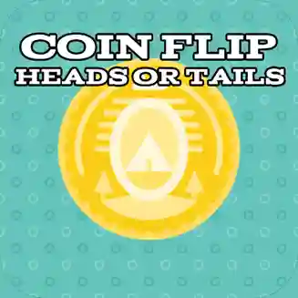

Flip a Coin OnlineLanza una moneda online
Heads or tails? Flip a coin in one tap to settle a decision, pick who goes first or just have fun. Choose a gold or silver coin and keep track of your heads and tails. It is free and needs no sign-up.¿Cara o cruz? Lanza una moneda con un toque para decidir algo, elegir quién empieza o simplemente divertirte. Elige una moneda de oro o de plata y lleva la cuenta de tus caras y cruces. Es gratis y no necesita registro.
Your coinTu moneda
How it worksCómo funciona
- Pick a gold or silver coin.Elige una moneda de oro o de plata.
- Tap the coin or the button to flip it.Toca la moneda o el botón para lanzarla.
- The result is chosen at random with a 50% chance for heads and 50% for tails, and your stats are saved in this browser.El resultado se elige al azar, con un 50 % de probabilidad para cara y un 50 % para cruz, y tus estadísticas se guardan en este navegador.
QuestionsPreguntas frecuentes
Is the coin flip fair?¿Es justo el lanzamiento?
Yes. Each flip uses your browser's random number generator, so heads and tails are equally likely and every flip is independent of the previous one.Sí. Cada lanzamiento usa el generador de números aleatorios de tu navegador, así que cara y cruz son igual de probables y cada tirada es independiente de la anterior.
Why do I sometimes get the same result many times in a row?¿Por qué a veces sale lo mismo varias veces seguidas?
Streaks are normal in random results. Over a small number of flips you can easily see 4 or 5 of the same side. The balance only evens out over many flips.Las rachas son normales en los resultados aleatorios. Con pocos lanzamientos es fácil ver 4 o 5 veces el mismo lado. El equilibrio solo aparece con muchos lanzamientos.
Do you store my results?¿Guardáis mis resultados?
Only on your own device, in your browser's local storage. Nothing is sent to a server. See the Privacy Policy.Solo en tu propio dispositivo, en el almacenamiento local del navegador. No se envía nada a ningún servidor. Consulta la Política de privacidad.

Want it on your phone?¿La quieres en el móvil?
Try Coin Flip Simulator for Android: gold or silver coins with animations, sounds and a heads-and-tails counter.Prueba Coin Flip Simulator para Android: monedas de oro o plata con animaciones, sonidos y un contador de caras y cruces.